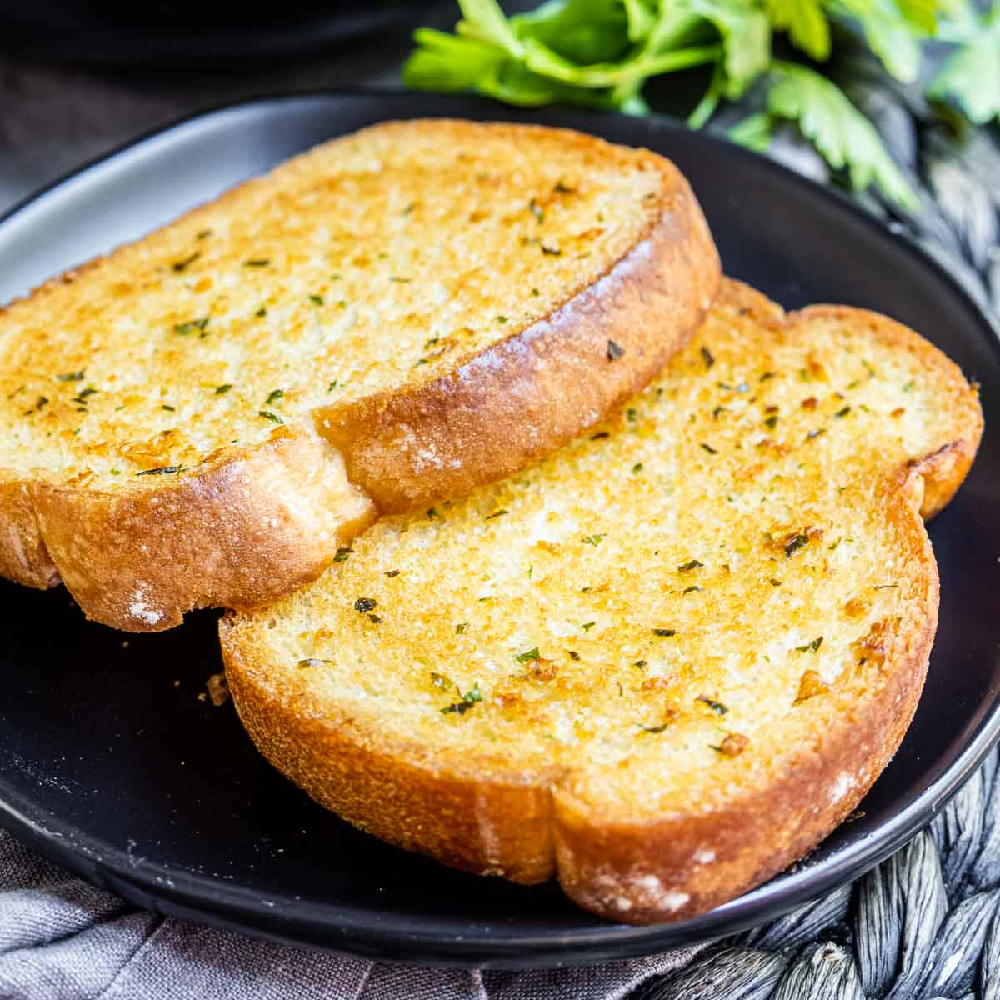

Garlic Toast

Delicious Nutritious Garlic Toast
An easy to make garlic toast recipe that is both delicious and nutritional.
And best of all, it only takes about five minutes of prep time.
Ingredients
- 1 loaf of 9 grain bread
- 1 stick of butter
- garlic powder
- onion powder
- nutritional yeast
Steps
- Place 9 grain bread in the toaster for two minutes.
- When toast has finished cooking, quickly spread butter on both slices.
- Sprinkle a generous amount of garlic powder on the toast.
- Lightly sprinkle with onion powder.
- Add one teaspoon nutritional yeast to each slice of toast to add a savory buttery flavor.
- Serve and enjoy.